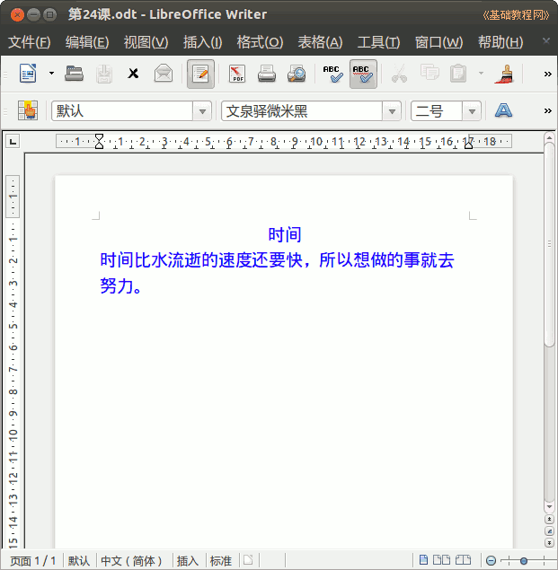

2014-2015 第一学期七年级文字处理和网页教学设计
作者：TeliuTe 来源：基础教程网
二十四、学会writer文字处理 返回目录 下一课
（一）教学设计
1、学习目标：学会Ubuntu基本操作，校园网操作，中英文指法
2、注意事项：绕过弯来，既不要跳也不要落，一楼过了二楼
3、教学过程：
1）教师准备学案和板书；
2）学生整队进入，开机抄黑板上笔记；
3）教师讲解板书演示操作；
4）学生打指法、日志、完成操作；
5）教师打勾记录学生指法成绩，检查日志和操作；
注：学生抄完笔记就开始打指法、日志，老师讲完后再继续完成；
（二）板书设计(学生笔记)
第24课学会writer文字处理
2014-12-13 17:10
１、打开主文件夹，新建文件夹，7-1
２、左侧栏，writer，显示程序窗口
３、输入文字，字体，艾泉驿微米黑
４、二号颜色，点保存，第24课到7-1
--
时间
时间比水流逝的速度还要快，所以想做的事就去努力。
--
操作图示：

（三）课后记
输完设好字体，刚好是两行，这样检查的时候就可以判断学生的输入情况
居中设也行不设也行，后面找机会再讲一下，文字处理没多少课时讲解
--
马甲里面做第二个的时候，可以选一下，不用再输入了
这样出错的概率就小一些
--
看清楚老师点的位置，出来一个什么，老师讲解的时候给学生要求一下
看来学习的一点一点都要要求到，要不就有学生出错
--
保存文件名容易错，忘记把文件名改成“第24课”
错的的让打开后，另存为一下，错的删除掉
--
错的太多了，就重新演示一下保存的步骤
如果有图文操作教程就好了，学生看着就知道对比着做了
--
如果有时间就把课程做成教程的形式，太费时间了就是没那多精力
大多数学生做得都可以，保存这个地方有的学生容易出错
--
先讲一下学新内容了，前面的自己复习多练
让学生记着7-1是七年级一班，文件夹和文件的区别还要克服一下
--
马甲可以领红包，然后买金币卡送给大号，这样两边挣金币就多些
把红包改为240个，之前的240个在第三个班就领完了
--
棍子用的挺多的，老是说话的敲一棍子，接嘴的也敲一下，拿别人笔记充数的
演示的时候说话的让一边站着，这个七年级也得多加小心才是
返回目录 下一课
本教程由86团学校TeliuTe制作|著作权所有
基础教程网：http://teliute.org/
美丽的校园……
转载和引用本站内容，请保留作者和本站链接。